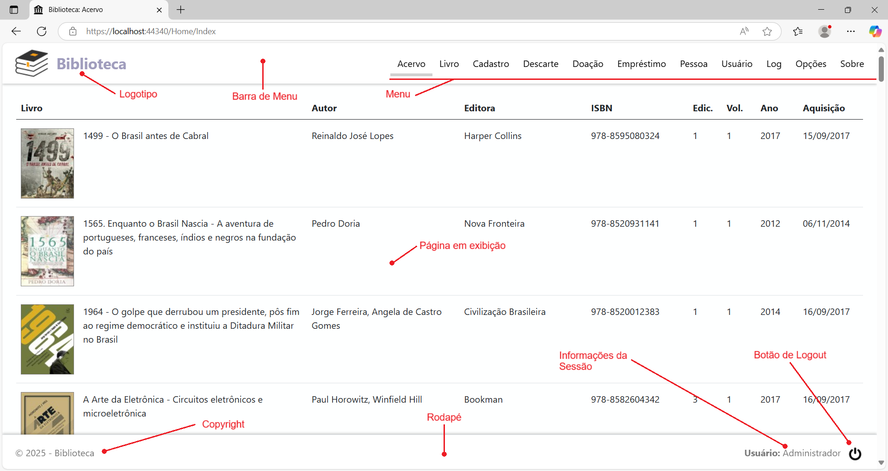
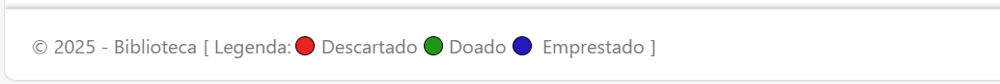
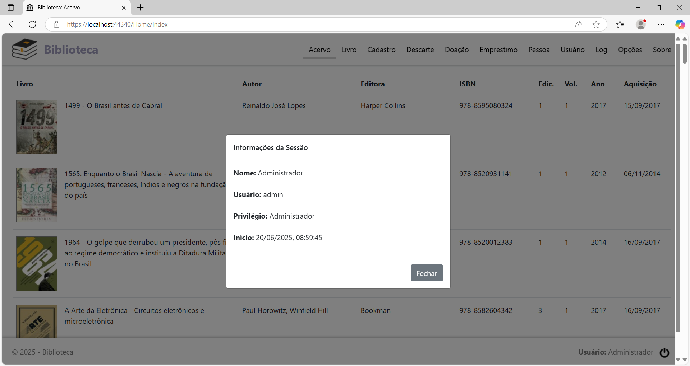
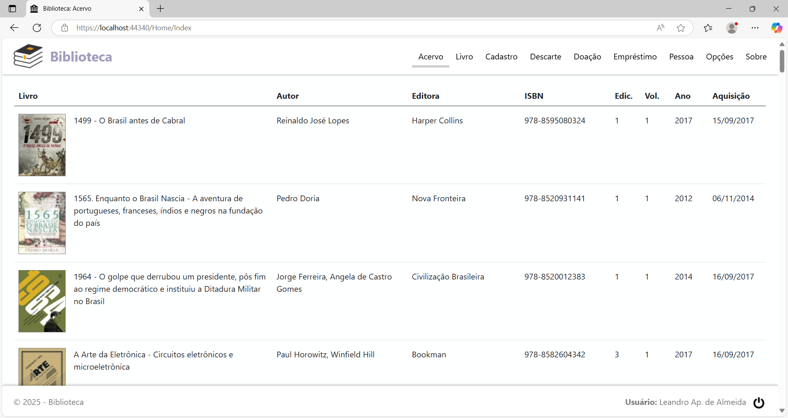

Seja bem-vindo(a)!
Neste tutorial você encontra a ajuda necessária para utilizar o sistema ©Biblioteca, uma aplicação web desenvolvida para facilitar o gerenciamento do seu acervo pessoal. Para compreender como a aplicação funciona, é importante identificar alguns elementos da sua interface gráfica de usuário, conforme mostrado na figura abaixo, e saber qual é a função de cada um deles:

A barra de menu e o rodapé ocupam posições fixas na tela do navegador. Apenas a página em exibição, ao centro, que muda de acordo com a opção de menu selecionada.
A barra de menu é composta pelo logotipo e pelo menu. A opção de menu que está selecionada terá como destaque uma barra de cor cinza logo abaixo do título. Por exemplo, na figura acima, a opção de menu que está selecionada é a Livro, e a página em exibição que corresponde a esta opção é Detalhes do Livro.
O rodapé é composto pelo campo copyright, pelo campo informações da sessão e pelo botão de Logout. O campo copyright pode conter uma legenda de cores, de acordo com a configuração do ambiente feita pelo usuário, conforme mostrado no recorte abaixo:

O campo informações da sessão exibe o nome do usuário em sessão. Se clicar neste nome, vai exibir a caixa de diálogo com informações adicionais sobre a sessão:

O botão de Logout encerra a sessão corrente, retornando à página de login.
O Layout da página mostrado no exemplo é o de Administrador, disponível para um usuário cadastrado no sistema com o privilégio de acesso de Administrador do Sistema. No Layout de Administrador, o menu tem as seguintes opções:
Livro: Exibe a página Detalhes do Livro, que mostra todos os dados sobre um livro selecionado.
Acervo: Exibe a página Livros no Acervo, que permite o gerenciamento dos livros que estão disponíveis no acervo.
Descarte: Exibe a página Livros Descartados, que permite o gerenciamento dos livros que foram descartados do acervo.
Doação: Exibe a página Livros Doados, que permite o gerenciamento dos livros que foram doados para terceiros.
Empréstimo: Exibe a página Empréstimos, que permite o gerenciamento de empréstimos realizados para terceiros.
Pessoa: Exibe a página Pessoas, que permite o gerenciamento de cadastros de pessoas que tomaram empréstimos ou receberam a doação de livros.
Usuário: Exibe a página Usuários, que permite o gerenciamento das contas de usuários que tem acesso à aplicação.
Log: Exibe a página Log de Sessão, que permite a visualização de todos os acessos que foram realizados no sistema.
Opções: Exibe a página de configuração do ambiente.
Sobre: Exibe a página de créditos.
Se o usuário em sessão é o usuário com o privilégio de acesso de Convidado, o layout da página muda, passando o menu a ter as seguintes opções:

O usuário Convidado não tem acesso à página Usuários nem à Log de Sessão.
No contexto de uma aplicação para o gerenciamento de um acervo particular, ter apenas um usuário com privilégio de Administrador faz sentido, pois infere-se que ela seja de uso individual, e não um sistema com múltiplos usuários, exigindo variados níveis de acesso e mais de um administrador. No máximo uma ou outra conta de convidado, caso queira dar acesso para outras pessoas gerenciarem o acervo ou consultarem as obras é o suficiente para implementar a lógica.
Agora que você já sabe como a aplicação funciona, explore as opções no menu ao lado para aprender como realizar cada processo envolvido com o gerenciamento de seu acervo pessoal, e se for de seu interesse, veja na opção Sobre o projeto como baixar o código-fonte do projeto para estudá-lo ou mesmo alterá-lo para se adequar melhor às suas necessidades específicas.